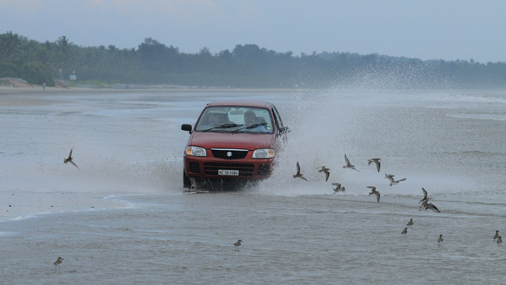

1 / 3

Caption Text
1 / 3

Caption Text
2 / 3

Caption Two
3 / 3

Caption Three
Change image every 2 seconds:
Kollam
( or Quilon (Coulão), formerly Desinganadu, is an old seaport and city on the Laccadive Sea coast of the Indian state of Kerala. The city is on the banks Ashtamudi Lake. Kollam has had a strong commercial reputation since the days of the Phoenicians and Romans.[10] Fed by the Chinese trade, it was mentioned by Ibn Battuta in the 14th century as one of the five Indian ports he had seen during the course of his twenty-four year travels.[11] Desinganadu's rajas exchanged embassies with Chinese rulers while there was a flourishing Chinese settlement at Kollam. In the 9th Century, on his way to Canton, China, Persian merchant Sulaiman al-Tajir found Kollam to be the only port in India visited by huge Chinese junks. Marco Polo, the Venetian traveller, who was in Chinese service under Kublai Khan in 1275, visited Kollam and other towns on the west coast, in his capacity as a Chinese mandarin.
Jatayu Earth’s Center or Jatayu Nature Park is a park and tourism centre under construction at Chadayamangalam in Kollam district of Kerala. Designed by Rajiv Anchal, This rock-theme nature park is about 38 km (24 mi) away from Kollam and 46 km (29 mi) away from the state capital, Thiruvananthapuram. It is the first PPP tourism initiative in the state of Kerala under the BOT model.[1] When open, Jatayu Nature Park will hold the distinction of having the world’s largest bird sculpture (200 feet (61 m) long, 150 feet (46 m) broad, 70 feet (21 m) in height and having 15,000 square feet (1,400 m2) of floor area) of the great mythical bird Jatayu.[2][3].Due to construction work visitor are allowed only after 17th august 2017.
Kollam Beach, also known as Mahatma Gandhi Beach, is a beach at Kollam city in the Indian state of Kerala. Kollam Beach is the first 'Beach Wedding Destination' in Kerala. ... As of July 2015 Kovalam, Varkala and Kollam are the only beaches in south Kerala with lifeguard outposts.
Ashtamudi Lake (Ashtamudi Kayal), in the Kollam District of the Indian state of Kerala, is the most visited backwater and lake in the state. It possesses a unique wetland ecosystem and a large palm-shaped (also described as octopus-shaped) water body, second only in size to the Vembanad estuary ecosystem of the state. Ashtamudi means 'eight coned' (Ashta : 'eight'; mudi : 'coned') in the local Malayalam language. The name is indicative of the lake's topography with its multiple branches. The lake is also called the gateway to the backwaters of Kerala and is well known for its houseboat and backwater resorts. Ashtamudi Wetland was included in the list of wetlands of international importance, as defined by the Ramsar Convention for the conservation and sustainable utilization of wetlands.